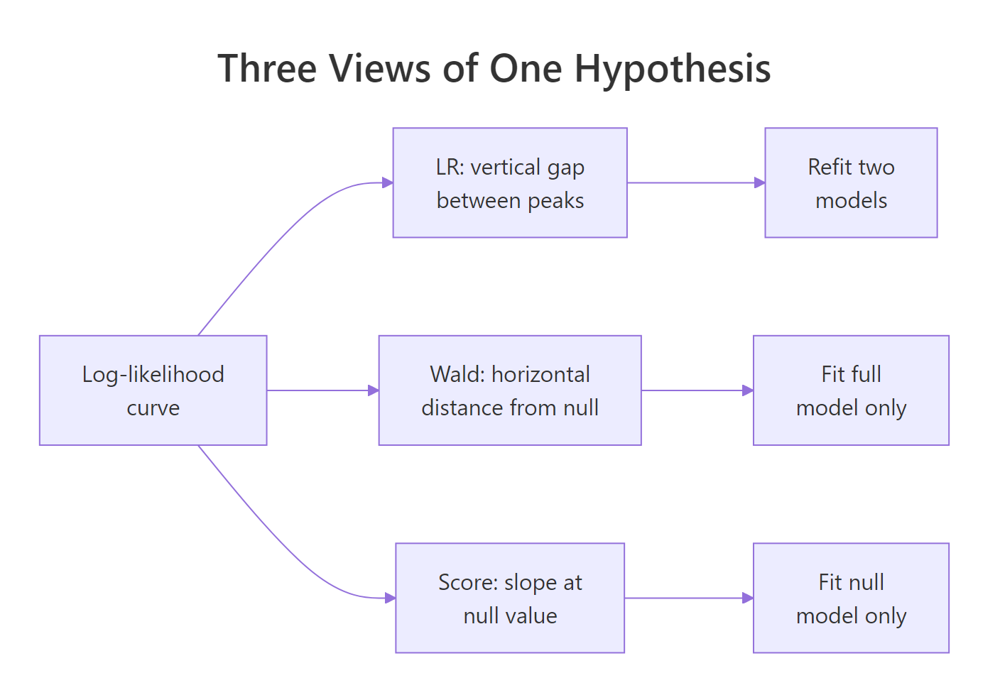
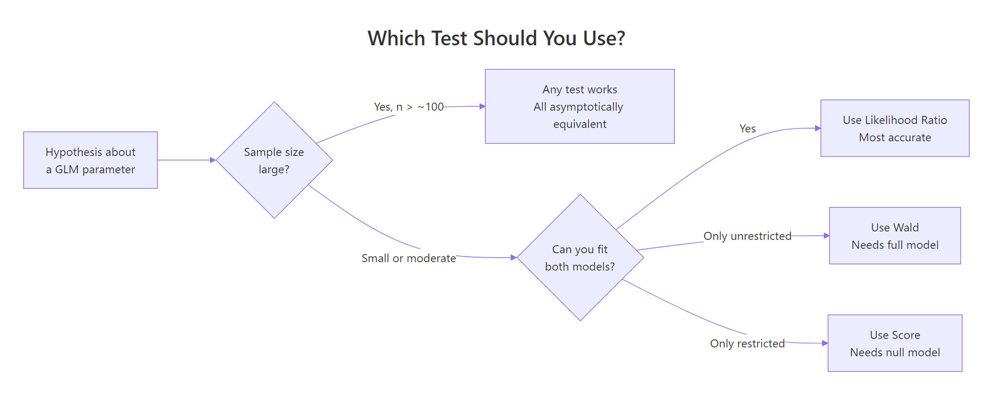

Likelihood Ratio, Wald & Score Tests in R: Three Ways to Test Hypotheses
The likelihood ratio, Wald, and score tests are three asymptotically equivalent ways to test hypotheses about parameters in a likelihood-based model. All three ask the same question, does a restricted model fit the data as well as the full one, but read the answer off the log-likelihood curve from three different angles.
Why do three different tests exist for the same question?
Every hypothesis test on a generalised linear model boils down to one question: do the extra parameters in the full model pay for themselves in fit? The three classical tests, likelihood ratio (LR), Wald, and score (also called Lagrange multiplier), answer that question by inspecting the log-likelihood curve at different points. Let's fit a small logistic regression on mtcars and watch all three produce p-values for the same hypothesis.
All three p-values point to the same conclusion: mpg + hp significantly improves fit over the null model. But the numbers are not identical. The LR and score tests read the likelihood surface directly and land near 0.0002, while the Wald test approximates that same surface with a quadratic and lands closer to 0.01. On a dataset this small (n = 32), that gap is the finite-sample disagreement the three tests are famous for.
Try it: Fit a richer model that adds am to mpg + hp. Use anova(..., test = "LRT") to test whether am is pulling its weight beyond full_model. Store the p-value in ex_bigger_p.
Click to reveal solution
Explanation: anova() with test = "LRT" compares two nested GLMs by contrasting their deviances. A large p-value tells you the added term (am) barely moves the log-likelihood, so the simpler model is fine.
How does the likelihood ratio (LR) test work?
The LR test compares the log-likelihood at the full model's peak to the log-likelihood at the restricted (null) model's peak. If the full model climbs much higher, the extra parameters are earning their keep. The test statistic is twice the vertical gap:
$$\text{LR} = 2 \bigl[\, \log L(\hat\theta_{\text{full}}) - \log L(\hat\theta_{\text{null}}) \,\bigr] \;\sim\; \chi^2_{q}$$
Where:
- $\log L(\hat\theta_{\text{full}})$ = log-likelihood at the unrestricted MLE
- $\log L(\hat\theta_{\text{null}})$ = log-likelihood at the restricted MLE
- $q$ = number of parameters set by the null hypothesis
Geometrically, the LR test measures a vertical distance on the log-likelihood plot. You need both model fits because you need both peak heights. Let's compute the LR statistic by hand and confirm it matches anova().
The LR statistic is about 16.87 on 2 degrees of freedom, giving a p-value of 0.00023. That matches the anova() output from the previous section exactly, because anova(m1, m2, test = "LRT") is doing this same arithmetic under the hood. The two-parameter degrees-of-freedom count reflects that the full model has two slopes that the null model does not.
Try it: Compute the LR statistic manually for a single-predictor model. Fit glm(vs ~ mpg, family = binomial) against the null glm(vs ~ 1, family = binomial), then apply the formula using logLik().
Click to reveal solution
Explanation: The formula is 2 * (logLik(full) - logLik(null)). The difference in parameter count (1 slope added) gives 1 df, so you would compare 18.32 against chi-square(1).
How does the Wald test work?
The Wald test stays in the full model and asks: how far is the MLE from the null value, measured in standard errors? If the coefficient is far out on the parameter axis, the null is implausible.
For a single parameter the statistic is:
$$W = \frac{(\hat\beta - \beta_0)^2}{\widehat{\text{Var}}(\hat\beta)} \;\sim\; \chi^2_1$$
For a vector of parameters you replace the ratio with a quadratic form using the covariance matrix:
$$W = (\hat{\boldsymbol{\beta}} - \boldsymbol{\beta}_0)^{\top} \, \widehat{\mathbf{V}}^{-1} \, (\hat{\boldsymbol{\beta}} - \boldsymbol{\beta}_0) \;\sim\; \chi^2_{q}$$
Geometrically, Wald measures the horizontal distance from the MLE to the null on the parameter axis. You only need the full model because that is where the MLE and its covariance live. R's summary() already reports Wald tests for individual coefficients, they are the z-values in the coefficient table.
The z-values in summary() are Wald statistics for each coefficient against zero. Squaring them gives chi-square(1) statistics, which matches the p-values in the Pr(>|z|) column. The joint test of both slopes gives W = 9.10 on 2 df, p = 0.011, the same Wald p-value we saw in the first table. Notice that this p-value is larger than the LR and score p-values from earlier, the Wald test is systematically more conservative in small samples here.
Try it: Compute the Wald statistic for the mpg coefficient using only coef() and vcov(). No summary().
Click to reveal solution
Explanation: The Wald z is simply the coefficient divided by its standard error. Squaring it produces the chi-square(1) Wald statistic.
How does the score (Lagrange multiplier) test work?
The score test flips the Wald perspective. Instead of standing at the full-model MLE, it stands at the null value and asks: is the log-likelihood sloping away from us here? If the tangent at $\beta_0$ is steep, the likelihood wants to climb toward the full model, so the null is implausible. If it is flat, the null fits fine.
Formally:
$$S = \frac{[\,U(\beta_0)\,]^2}{I(\beta_0)} \;\sim\; \chi^2_{q}$$
Where:
- $U(\beta_0)$ = score function (first derivative of the log-likelihood) evaluated at $\beta_0$
- $I(\beta_0)$ = Fisher information at $\beta_0$
- $q$ = number of restrictions in the null
The score test's charm is that it only needs the restricted model. You never have to fit the full model, a big win when the full model is expensive, unstable, or contains dozens of candidate predictors. In R, anova() with test = "Rao" computes the score test for nested GLMs.

Figure 1: Three views of one hypothesis, each test reads the log-likelihood curve from a different angle.
The score statistic is 17.10 on 2 df, p = 0.00019. Like LR, the score test reads the likelihood surface directly (it uses the slope and curvature, not a quadratic approximation), so it aligns closely with LR even in small samples. The Rao column name honours C.R. Rao, who introduced the score test in 1948 as an alternative to Wald's.
Try it: Use the score test to check whether wt alone predicts vs. Fit the null and full models, then compare them with anova(..., test = "Rao").
Click to reveal solution
Explanation: anova(null, full, test = "Rao") computes the score statistic for the restriction null vs full. A p-value of 0.032 rejects the null that wt has no effect on vs, at the usual 5% level.
When do the three tests disagree?
All three tests have the same limiting chi-square distribution under the null, so with enough data they converge. In small samples (or with sparse binary outcomes, or near-perfect separation), the log-likelihood is skewed and the three tests read its shape differently. Let's simulate a small logistic dataset and compare.
With only 15 points, the three tests land at noticeably different p-values for the same null. The LR and score tests report strong evidence against the null (p around 0.002 to 0.004), while the Wald test gives a borderline p of about 0.05. The reason: the log-likelihood here is not symmetric around the MLE, so the quadratic approximation Wald relies on understates the evidence. Let's visualise the curve so you can see what each test is measuring.
The plot makes the geometry concrete. The LR test's statistic is proportional to the vertical drop from the MLE peak to the null point on the curve. The Wald test's statistic is the horizontal distance from MLE to null, rescaled by the local curvature at the MLE. The score test's statistic is the steepness of the tangent to the curve at the null. When the curve is symmetric and near-quadratic, all three read the same height, distance, and slope and produce the same p-value. When it is skewed (as with small n or separation), they disagree.
Try it: Re-run the small-sample simulation with n = 200 instead of 15. Compare the three p-values. Do they still disagree by as much?
Click to reveal solution
Explanation: With 200 observations, the log-likelihood is smooth and quadratic near the MLE, so all three tests agree to many decimal places. Differences remain in the tail probabilities, but they no longer affect any decision.
Which test should you use in practice?
There is a general ordering that holds in most practical situations: prefer the likelihood ratio test by default. It is the most powerful of the three (smallest Type II error for a fixed Type I) and it handles skewed likelihoods gracefully. Wald is convenient when you only have the full model fit and want per-coefficient z-values from summary(). Score is the right choice when fitting the full model is hard and you want to screen whether adding a variable would help.

Figure 2: Decision guide, which test to reach for given your sample size and which model you can fit.
A quick rule-of-thumb table you can pin above your desk:
| Situation | Recommended test | R call |
|---|---|---|
| Default, both models fit cheaply | LR | anova(m1, m2, test = "LRT") |
| One-coefficient test from a fitted model | Wald | summary(model) |
| Joint test of several coefficients | LR or joint Wald | anova() or manual quadratic form |
| Full model hard to fit, null is easy | Score | anova(null, full, test = "Rao") |
| Small sample, skewed likelihood, separation | LR | anova(..., test = "LRT") |
| Tons of data, any test | Any (LR is safest) | same as above |
Try it: Match each scenario to the test you would run. No code needed, just reason it through, then check the solution.
- You fit one large logistic regression and want the p-value for a single predictor you forgot to remove.
- You have 5,000 observations and want the p-value on a two-parameter linear restriction.
- You fit a simple baseline, but the candidate full model is slow to converge.
Click to reveal solution
1. Wald. The z-value and p-value are already in summary(model)$coefficients for the single coefficient.
2. Any; LR is a safe default. With 5,000 obs, all three converge; LR via anova() is the cleanest report.
3. Score. You compute the test from the baseline alone via anova(baseline, full, test = "Rao"), which avoids relying on a difficult full-model fit. For a pure null-only screen, use glm.scoretest() in the statmod package or a manual score statistic.
Explanation: The decision hinges on which model(s) you already have and how expensive they are to fit. When in doubt, use LR, it is the most broadly reliable.
Practice Exercises
Exercise 1: Does wt add explanatory power?
Fit glm(vs ~ mpg + hp, family = binomial) and glm(vs ~ mpg + hp + wt, family = binomial) on mtcars. Use the likelihood ratio test to check whether wt significantly improves fit after controlling for mpg and hp. Store the statistic, df, and p-value in my_lr.
Click to reveal solution
Explanation: The LR statistic is about 0.03 on 1 df, with p around 0.86. wt adds essentially no information once mpg and hp are already in the model.
Exercise 2: Compute all three tests manually on simulated data
Simulate 30 observations from a logistic model with a true coefficient of 0.8 on a standard-normal predictor. Fit the full and null models. Compute the LR, Wald, and score p-values for $H_0: \beta = 0$ using base-R primitives (logLik(), coef(), vcov(), anova(..., test = "Rao")). Collect them in a named vector my_three.
Click to reveal solution
Explanation: With n = 30 and a moderate effect, the LR and score p-values cross the conventional 0.05 threshold while the Wald p-value stays above it, illustrating again that Wald is the most conservative in small samples when the log-likelihood is skewed.
Complete Example
Let's tie everything together with a simulated admissions-style dataset and compare all three tests for a categorical predictor.
With 400 observations, all three tests converge to essentially the same story: rank is a highly significant predictor of admission with a chi-square around 19 or 20 on 3 df, p around 0.0002. The differences are now in the fourth decimal of the p-value, far below any threshold that would change a decision. This is the asymptotic regime where the choice of test genuinely does not matter.
Summary
| Test | Statistic | Models required | Geometry | R function | When to prefer |
|---|---|---|---|---|---|
| Likelihood Ratio | $2(\ell_{\text{full}} - \ell_{\text{null}})$ | Both | Vertical gap | anova(m1, m2, test = "LRT") |
Default, small n, joint tests |
| Wald | $(\hat\beta - \beta_0)^{\top} \widehat{V}^{-1} (\hat\beta - \beta_0)$ | Full only | Horizontal distance from null, rescaled | summary(model) or quadratic form |
Per-coefficient z-values, already have full fit |
| Score (Rao) | $U(\beta_0)^2 / I(\beta_0)$ | Null only | Slope at null | anova(null, full, test = "Rao") |
Full model expensive, variable screening |
All three are asymptotically chi-square equivalent. In large samples they agree. In small samples LR is the most reliable, Wald is the most conservative when the likelihood is skewed, and score is a useful shortcut when you only have the null model at hand.
References
- UCLA IDRE, FAQ: How are the likelihood ratio, Wald, and Lagrange multiplier (score) tests different and/or similar? Link
- Agresti, A. Categorical Data Analysis (3rd ed.). Wiley (2013), Chapter 4. Publisher
- Wasserman, L. All of Statistics. Springer (2004), Chapter 10. Link
- Hosmer, D.W., Lemeshow, S. & Sturdivant, R.X. Applied Logistic Regression (3rd ed.). Wiley (2013). Publisher
- R Core Team,
anova.glmreference. Link - Fox, J. & Weisberg, S. An R Companion to Applied Regression (3rd ed.). Sage (2019), Chapter 5.
- The Stats Geek, "Wald vs Likelihood Ratio Test." Link
- Wikipedia, "Wald test." Link
- Rao, C.R. (1948). Large-sample tests of statistical hypotheses concerning several parameters with applications to problems of estimation. Proceedings of the Cambridge Philosophical Society, 44, 50-57.
Continue Learning
- Hypothesis Testing in R: Understand the Framework, Not Just the p-Value, the parent walk-through of the hypothesis-testing framework, with the null/alternative setup and p-value interpretation spelled out in full.
- Logistic Regression With R, the workhorse GLM that these three tests apply to most often, with
glm(family = binomial)examples and diagnostics. - Statistical Tests in R, a broader index of when to use which test beyond the maximum-likelihood trinity.